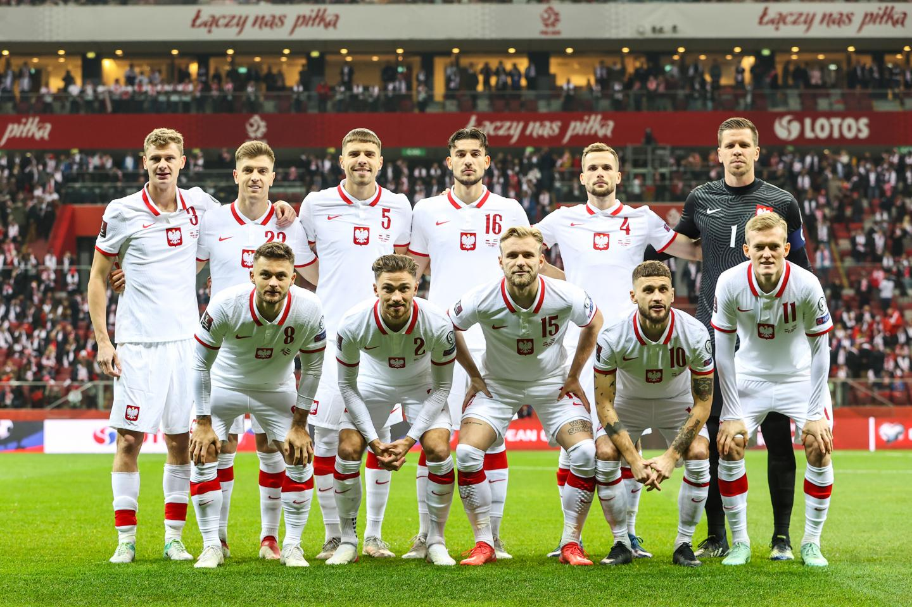

Polska kadra w opałach?
Przed reprezentacją Polski kolejne mecze eliminacji mistrzostw Europy. Drużyna zagra w październiku z Wyspami Owczymi (12.10) oraz Mołdawią (15.10). Jej szanse na bezpośredni awans są nieduże. Trzy spotkania przed końcem kwalifikacyjnej grupy kadra zajmuje czwarte, przedostatnie miejsce, gromadząc tylko sześć punktów. Ze względu na nieudane wyniki (między innymi porażkę 2:3 z Mołdawią oraz 0:2 z Albanią) pracę stracił Fernando Santos, a zastąpił go Michał Probierz. W rozmowie z kanałem "FootTruck" Wojciech Szczęsny przyznał, że nowy selekcjoner już się z nim kontaktował. – Trener Probierz dodzwonił się od razu, pierwszego dnia. (...) Miałem polskiego Mourinho, teraz mam polskiego Guardiolę – zażartował, nawiązując do porównań Czesława Michniewicza oraz obecnego trenera kadry do zagranicznych szkoleniowców – stwierdził. Bramkarz podkreślił także, że od kiedy gra w drużynie narodowej (czyli od 2009 roku) atmosfera wokół niej nigdy nie była gorsza. – Nie zgadzają się ani wyniki, ani gra, ani cała atmosfera wokół związku. Pod tym względem aż tak źle jeszcze nie było. O tym świadczą też tak częste zmiany trenerów. Chociaż trenerzy prawie nigdy nie są winni tego jak to wygląda, ich zmiany są świadectwem na to, że nie jest fajnie – zauważył.